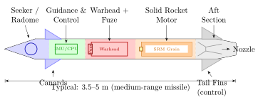

Chapter 16: Introduction to Missiles¶
16.1 Definition, Scope, and Nomenclature¶
16.1.1 What is a Missile?¶
The word missile derives from the Latin mittere (to throw or send). In the modern engineering and military context, a guided missile is a self-propelled, aerodynamically or ballistically controlled projectile that carries a warhead to a designated target under the direction of an on-board or off-board guidance system. This definition distinguishes guided missiles from several related categories that are frequently confused in popular usage.
Missile vs. Rocket.
A rocket is an unguided, self-propelled projectile. A missile is guided. All missiles use rocket (or air-breathing) propulsion, but not all rockets are missiles. Artillery unguided rockets (e.g., BM-21 Grad, MLRS M26 unguided) are rockets; their GMLRS guided variants become missiles once they are equipped with a GPS/INS seeker and steering fins.
Missile vs. Guided Bomb.
A guided bomb (also called a Precision-Guided Munition, PGM, or glide weapon) is not self-propelled; it falls under gravity from an aircraft, steered by movable fins or wings. Examples include the GBU-31 JDAM and Paveway series. A missile is self-propelled by an on-board engine throughout all or part of its flight. The distinction blurs with powered glide weapons (AGM-154 JSOW, KEPD 350 Taurus), which carry a turbojet sustainer.
Missile vs. Torpedo.
A torpedo is a self-propelled, underwater-running weapon. By the strict modern definition, a torpedo is an underwater missile; US Navy doctrine classifies them separately, though the physics of guidance and propulsion are equivalent. The term “missile” in this text refers primarily to air, surface, or ground-launched weapons operating in the atmosphere.
Missile vs. Loitering Munition.
A loitering munition (also called a “kamikaze drone” or “suicide drone”) operates like an unmanned aircraft for an extended period while searching for a target, then dives into it. The distinction from a missile is gradual: loitering munitions (IAI Harop, Switchblade 600, Lancet-3) have longer on-station times and greater man-in-the-loop capability; true missiles typically have shorter time of flight and more limited guidance adjustment. Chapter 15 (section on EW drones) and Chapter 17 address loitering munitions in detail.
16.1.2 Weapon System vs. Missile System¶
A missile is the physical object. A missile system encompasses the complete set of hardware and software required to detect, identify, track, and destroy a target: launcher, fire control radar/electro-optical sensor, command and control (C2) hardware, logistics and maintenance equipment, training, and the missile itself. The weapon system includes the missile system integrated with the platform (ship, aircraft, ground vehicle, submarine) and the operational C2 chain. This distinction is critical in programme management: the missile itself typically represents only 30–50% of the total system cost.
16.1.3 Historical Context¶
The history of guided missiles is addressed comprehensively in Chapter 1. For context here: the German V-2 (Aggregat 4, 1944) was the first operational ballistic missile; the first guided anti-aircraft missile in combat service was the German Wasserfall (never deployed operationally but flight-tested); the first operational AAM was the AIM-4 Falcon (1956). The cold war drove explosive proliferation of all missile types. The transition from vacuum-tube analogue guidance to solid-state digital guidance (1970s–80s), GPS-aided navigation (1990s), and networked seekers with AI-enabled discrimination (2010s–present) defines the technology arc of the field.
16.2 Missile Anatomy¶
16.2.1 Major Sections¶
A guided missile is conventionally divided into four to six major sections from nose to tail. The exact division varies by missile type (see Chapter 17 for type-specific anatomy), but the canonical arrangement for a radar-homing surface-attack missile is:
-
Seeker/Sensor Section (Nose): Contains the terminal guidance sensor—radar antenna (active or passive), IR detector array, or laser receiver. Includes radome or nose fairing (RF-transparent or IR-transparent material), gimballed sensor head with \(\pm\)45\(^\circ\) to \(\pm\)90\(^\circ\) field of regard, and seeker electronics.
-
Guidance and Control Section: On-board computer (mission processor, DSP); inertial measurement unit (IMU); GPS/GNSS receiver; data links; autopilot avionics. On older missiles this section is combined with the seeker; on modern missiles it is a modular Line-Replaceable Unit (LRU).
-
Warhead Section: The lethal payload. May be high-explosive blast-fragmentation, shaped-charge HEAT, thermobaric, kinetic penetrator, or sub-munitions dispenser. The warhead section includes the safe-arm-fire (SAF) device.
-
Fuze Section: Contact (point-detonating), proximity (radar, laser, or acoustic), or time fuze. Often integrated into the forward face of the warhead. On some missiles, the fuze is distributed (a fore-fuze and an aft-fuze flank the warhead).
-
Propulsion Section: Solid rocket motor (SRM), liquid rocket engine (LRE), ramjet, scramjet, or turbojet. Includes propellant grain, igniter, case, and possibly a boost-sustain grain configuration.
-
Aft Section / Nozzle and Fins: Nozzle(s) for thrust vectoring or fixed exhaustion; aerodynamic control surfaces (canards at the nose, mid-body strakes, tail fins); actuators (electromechanical, hydraulic, or pneumatic).
16.2.2 Missile Cross-Section Diagram¶

16.2.3 Mass Breakdown and Centre of Gravity¶
The mass budget of a typical medium-range air-to-ground missile:
| Subsystem | Mass (kg) | Fraction (%) | Notes |
|---|---|---|---|
| Propellant (SRM grain) | 200 | 40.0 | Primary driver of range |
| Warhead (incl. explosive fill) | 100 | 20.0 | Blast-fragmentation |
| Airframe and structure | 80 | 16.0 | CFRP/Al7075 |
| Guidance and control section | 55 | 11.0 | Seeker, IMU, CPU, power |
| Propulsion hardware (case, nozzle) | 40 | 8.0 | SRM case, igniter, TVC |
| Fuze and SAF device | 10 | 2.0 | Safety device + fuze |
| Miscellaneous (wiring, sealant) | 15 | 3.0 | Integration items |
| Total | 500 | 100 |
For stable flight, the Centre of Pressure (CP) — the point through which the net aerodynamic force acts — must lie aft of the Centre of Gravity (CG). The static stability margin:
Positive \(SM\) indicates static stability. Typical missiles are designed for \(SM = 1\)–3 calibres. Excessively large \(SM\) increases the control power required to manoeuvre; too small \(SM\) risks divergence from small disturbances.
16.3 Flight Mechanics — Six-Degree-of-Freedom Equations of Motion¶
16.3.1 Reference Frames¶
The missile dynamics are conventionally described in two reference frames:
-
Body frame \(\{B\}\): origin at CG; \(x_B\) along nose, \(y_B\) to starboard, \(z_B\) downward (right-hand system).
-
Earth-centred Inertial frame \(\{I\}\) (or local tangent NED frame for short flights).
The rotation from \(\{I\}\) to \(\{B\}\) is parameterised by the Euler angles \(\{\phi, \theta, \psi\}\) (roll, pitch, yaw) via the Direction Cosine Matrix \(C_{BI}\).
16.3.2 Translational Equations of Motion¶
Applying Newton’s second law in the body frame to a missile of instantaneous mass \(m(t)\) (decreasing due to propellant burn), with forces resolved along body axes:
where \((u, v, w)\) are body-axis velocity components; \((p, q, r)\) are body-axis angular rates (roll, pitch, yaw); \(F_{Ax}, F_{Ay}, F_{Az}\) are aerodynamic force components; \(F_{Tx}, F_{Ty}, F_{Tz}\) are thrust force components; and \(g\) is gravitational acceleration.
In the more compact vector form:
The term \(-\dot{m}\mathbf{V}_{exhaust}\) accounts for the apparent force from mass ejection (rocket thrust by momentum exchange).
16.3.3 Rotational Equations of Motion¶
The Euler moment equations in the body frame, accounting for the asymmetric inertia of a slender body of revolution where \(I_{xy} = I_{xz} = 0\) but \(I_{xx} \neq I_{yy} = I_{zz}\):
where \(L_a, M_a, N_a\) are aerodynamic moments; \(L_T, M_T, N_T\) are thrust moments (non-zero when thrust is vectored or CG offset from motor axis); and the cross-product terms are gyroscopic. For a typical air-to-air missile: \(I_{xx} \approx 0.04\) kg\(\cdot\)m\(^2\), \(I_{yy} = I_{zz} \approx 4.2\) kg\(\cdot\)m\(^2\).
16.3.4 Kinematic Equations¶
The Euler angle rates relate to body-axis angular rates:
This formulation has a singularity at \(\theta = \pm90^\circ\) (vertical flight). Quaternion representation avoids singularity:
where \(\mathbf{q} = [q_0, q_1, q_2, q_3]^T\) is the unit quaternion and \(\boldsymbol{\Omega}\) is the skew-symmetric matrix of angular rates. Quaternion formulation is standard in all modern missile autopilot simulations.
16.3.5 Aerodynamic Angles¶
Angle of attack \(\alpha\) and sideslip \(\beta\):
where \(V = \sqrt{u^2 + v^2 + w^2}\) is the total velocity. For a slender body of revolution, the normal-force coefficient \(C_N\) is approximately:
where \(C_{N\alpha} \approx 2\) per radian (slender body theory, Munk 1924), and the cubic term accounts for nonlinearity at \(\alpha > 15^\circ\).
16.3.6 Guidance Frame and Homing Dynamics¶
In the line-of-sight (LOS) coordinate frame, the interception geometry is described by the LOS angle \(\lambda\) and its rate \(\dot\lambda\). For proportional navigation guidance:
where \(N'\) is the navigation ratio (typically 3–5), \(V_c\) is closing velocity (positive when decreasing range), and \(\dot{\lambda}\) is the LOS rate. The manoeuvre required to achieve zero miss distance is the commanded lateral acceleration \(a_c\).
16.3.7 Guidance Frame Transformations: Roll-Stabilised vs. Skid-to-Turn¶
Roll-Stabilised.
The missile roll rate is controlled to keep a reference axis (e.g., fin plane) aligned with the LOS vertical. Pitch and yaw channels are decoupled. Used in many radar-homing missiles (AIM-7, RIM-66 SM-2).
Bank-to-Turn (BTT).
Like a conventional aircraft, the missile rolls to place the high-lift plane in the direction of the commanded manoeuvre, then pulls. Used in cruise missiles (Tomahawk, KEPD 350) for efficient long-range cruise.
Skid-to-Turn (STT).
Equal manoeuvre capability in pitch and yaw. The missile does not roll; it generates lateral force by combining fin deflections. Used in most short-range AAMs (AIM-9, ASRAAM, IRIS-T). The penalty is higher aerodynamic drag due to off-axis angles of attack.
Spin-Stabilised.
Unguided rockets and older guided missiles used high spin rates (\(p = 100\)–300 rad/s) for gyroscopic stability. Gyroscopic effects couple pitch and yaw, requiring careful guidance law design.
16.4 Performance Metrics¶
16.4.1 Range¶
The achievable range of a missile is governed by the Tsiolkovsky rocket equation applied to the propellant mass fraction, modified by aerodynamic drag losses:
where \(I_{sp}\) is specific impulse (s), \(g_0 = 9.80665\) m/s\(^2\), \(m_0\) is initial mass, and \(m_f\) is final (burnout) mass. The velocity increment achieved is reduced by gravitational losses during ascent and by aerodynamic drag (drag velocity loss):
For an SRM-propelled missile at moderate altitude, \(\Delta V_{drag}\) is typically 100–500 m/s depending on body drag and burn duration. The range for a ballistic projectile after burnout (vacuum, flat Earth approximation):
maximised at \(\gamma_{BO} = 45^\circ\). Aerodynamic missiles maintain powered/gliding flight and achieve range determined by the sustained lift-to-drag ratio:
16.4.2 Accuracy — Circular Error Probable (CEP)¶
Circular Error Probable (CEP) is the radius of a circle centred on the aim point within which 50% of rounds from an identical firing fall. For a bivariate normal distribution with equal standard deviations \(\sigma_x = \sigma_y = \sigma\):
The probability that a hit falls within radius \(r\) from the aim point:
Operational CEP values: GPS-guided Tomahawk \(\approx\) 5–10 m; JDAM \(\approx\) 10–30 m; unguided bomb (dumb bomb) \(\approx\) 90–150 m; MIRV ICBM (Minuteman III, GPS-aided) \(\approx\) 120 m; Russian SS-18 Mod 6 \(\approx\) 200 m.
16.4.3 Lethality Metrics¶
Single-Shot Kill Probability.
The probability that a single missile destroys the target:
where \(P_d\) is the probability of detecting the target, \(P_i\) is the probability of intercepting (guidance success), and \(P_{kill|hit}\) is the conditional kill probability given the missile reaches lethal range.
Lethal Radius.
The effective lethal radius \(R_L\) of a blast-fragmentation warhead is defined as the range at which the probability of kill of an average area target is \(P_{kill|range} = 0.5\):
where \(W_{HE}\) is TNT-equivalent explosive mass (kg) and \(K_L\) is a target vulnerability constant (typically 1.5–4 for unarmoured vehicles; 0.5–1.0 for armoured targets).
Salvo Doctrine.
To achieve a required total kill probability \(P_{req}\) against a target with \(P_k\) per missile:
Example: \(P_{req} = 0.95\), \(P_k = 0.70\): \(n = \ln(0.05)/\ln(0.30) = 2.48 \Rightarrow 3\) missiles.
16.4.4 Speed Classification¶
| Regime | Mach Range | Speed (km/h) | Aerodynamic Regime | Representative Systems |
|---|---|---|---|---|
| Subsonic | \(<0.8\) Ma | \(<\)980 | Incompressible, low drag | Tomahawk, Taurus KEPD 350 |
| Transonic | 0.8–1.2 Ma | 980–1,480 | Shock wave formation, buffet | Many early SAMs |
| Supersonic | 1.2–5 Ma | 1,480–6,120 | Oblique/normal shocks | SM-6, MBDA Meteor, Brahmos |
| Hypersonic | \(>5\) Ma | \(>\)6,120 | Aero-thermal heating; plasma | DF-17 HGV, Kinzhal, AGM-183 |
16.4.5 Manoeuvrability¶
Lateral acceleration capability in units of \(g\) (9.81 m/s\(^2\)) is the primary manoeuvrability metric:
Modern short-range AAMs achieve instantaneous lateral accelerations of 50–80 \(g\) during terminal engagement. The maximum sustained lateral acceleration is limited by structural strength (usually expressed as the limit-load factor, typically \(n_{lat,limit} = 30\)–40 \(g\) for maintained manoeuvre).
The kinematic envelope defines the set of all target positions/velocities from which the missile can achieve an intercept. It is bounded by maximum lateral acceleration on one side and minimum seeker tracking rate / launch dead zone on the other, and is a strong function of target closing velocity.
16.4.6 Time of Flight and Reaction Time¶
Time of flight \(t_{TOF}\) from launch to intercept is critical for:
-
Target reaction time — a supersonic missile at 3 Ma leaves an aircraft with \(\sim\)15 s to respond from 15 km; a hypersonic missile at 10 Ma leaves \(<\)5 s.
-
Battery life of guidance system (power available for seeker and computer).
-
Maximum range achievable before motor burnout and kinetic energy exhaustion.
Average TOF for common missile types: short-range AAM (2 km): 3–8 s; medium-range AAM (50 km): 30–90 s; surface-to-surface ballistic (300 km): 5–8 min; ICBM (10,000 km): 25–30 min.
16.5 Propulsion Overview¶
Propulsion is treated in depth in Chapters 19–20. This section provides a comparative overview sufficient for system-level trade analysis.
| Type | Fuel/Oxidiser | \(I_{sp}\) (s) | Thrust Level | Speed Range | Applications |
|---|---|---|---|---|---|
| Solid Rocket Motor (SRM) | HTPB/AP/Al | 240–300 | 100 N – 4 MN | 0–5 Ma | AAM, SAM, ATGM, ICBM |
| Liquid Rocket Engine (LRE) | LOX/RP-1, UDMH/N\(_2\)O\(_4\) | 290–450 | 1 kN – 1 MN | 0–5 Ma | Ballistic, SCUD, V-2 |
| Turbojet / Turbofan | Kerosene (JP-10) | 2,000–4,000 | 1–50 kN | 0.5–1 Ma | Cruise missiles |
| Ramjet (liquid fuel) | JP-10 + ram air | 800–1,200 | 1–300 kN | 2–5 Ma | BrahMos, Meteor |
| Scramjet | H\(_2\) or JP-7 + ram air | 1,000–2,000 | 1–100 kN | 5–15 Ma | X-51A, experimental |
| Dual-Pulse SRM | HTPB/AP, two grains | 270–290 | Variable | 0–4 Ma | AMRAAM, MBDA Aster |
| Boost-Glide Rocket | Solid + glide | 280–310 (boost) | Boost only | 5–20 Ma | DF-17, AGM-183 ARRW |
The boost-sustain propulsion profile is common in many air-to-air and surface-to-air missiles: a high-thrust boost grain accelerates the missile to supersonic speed within 0.5–2 s; a lower-thrust sustainer grain maintains speed for the flight phase. An unpowered coast phase follows burnout; the missile decelerates due to drag. Terminal manoeuvre depletes remaining kinetic energy:
The velocity at intercept must exceed the minimum manoeuvre speed:
16.6 Guidance Overview¶
Guidance is treated in depth in Chapters 20–21.
16.6.1 Guidance Law Classification¶
-
Command Guidance: A ground or airborne radar tracks both the missile and the target. A ground computer calculates correction commands and uplinks them to the missile via radar beam or radio. SA-2/SA-6 SAMs use command guidance with terminal semi-active homing. Accuracy dependent on ground-radar resolution.
-
Beam Riding: The missile navigates to stay in the centre of a radar or laser beam pointed at the target. Simple, jam-resistant (if laser). Used in SACLOS ATGMs (Kornet, Milan), shoulder-fired SAMs (Starstreak). Accuracy degrades with range as beam width increases.
-
Active Homing: On-board radar transmits and receives — fully autonomous after launch (“fire and forget”). Used by AIM-120 AMRAAM, SM-6, Aster 30. Range limited by seeker radar power (typically illuminates to 25–50 km).
-
Semi-Active Homing: Ground or aircraft radar illuminates the target; the missile homes on the reflected energy. Requires continuous illuminator pointing at the target. AIM-7 Sparrow, SM-2 Block II. Disadvantage: the illuminating platform is committed until impact.
-
Passive (IR) Homing: Seeker homes on IR emission from target engine or skin heating. AIM-9X, ASRAAM, IRIS-T, Mistral. All-aspect capability on modern uncooled/cooled FPA seekers; jam-resistant (flare rejection algorithms).
-
INS/GPS + Terminal Seeker: Mid-course via INS/GPS; terminal via active radar (JASSM-ER), IIR (JSOW-C), or SAL (Brimstone). Combines long standoff range with precision terminal guidance.
16.6.2 Proportional Navigation Guidance Law¶
Proportional Navigation (PN) is the most widely deployed guidance law for homing missiles:
True PN (TPN) generates acceleration normal to the line of sight:
Augmented PN (APN) adds target acceleration term to improve engagement against manoeuvring targets:
Optimal PN (OPN) / Optimal Guidance Law (OGL) minimises a cost function of miss distance and control effort:
where \(t_{go}\) is estimated time-to-go. OPN requires target acceleration estimation (via target tracker).
16.7 Warhead and Effects Overview¶
Warheads are treated in depth in Chapter 22.
16.7.1 Warhead Type Classification¶
-
HE Blast-Fragmentation: Cylindrical steel or tungsten alloy fragmentation sleeve surrounds a cylindrical HE charge. Detonation creates a radially expanding fragment cloud (initial velocity 1,200–2,500 m/s) plus a blast wave. Effective lethal radius for soft targets: 10–30 m. Used in AAMs, SAMs, air-to-ground.
-
Shaped Charge (HEAT): A metal-lined cavity (copper or tantalum) is collapsed by HE detonation, forming a high-velocity jet (\(>\)8 km/s) capable of penetrating 600–1,200 mm RHA. Used in ATGMs (Kornet, TOW, Javelin), anti-ship missiles (Exocet). Defeated by reactive armour (ERA).
-
Thermobaric (FAE): Aerosol of hydrocarbon fuel dispersed then ignited; overpressure wave penetrates into enclosed spaces (caves, bunkers, vehicles). Blast pressure duration is 5–8\(\times\) longer than HE of equal mass. Used in TOS-1A, RPG-7TBG, and some cruise missile warheads.
-
Kinetic Energy (KE) Penetrator: High-density rod (depleted uranium or tungsten, \(L/D \approx 10\)–30) at \(>\)1 km/s. Penetrates armour by plastic deformation and shear. Effective against modern MBTs. Used in long-rod penetrators for APFSDS tank rounds; adapted to anti-ship kinetic impactors (Conventional Prompt Global Strike concept).
-
EMP/HPM Warhead: High-power microwave or E-bomb warhead generates electromagnetic pulse to disable electronics without kinetic effect. Flux-compression generator (FCG) can produce GW-level pulses.
-
Sub-Munition Dispenser (Cluster): A carrier payload opens at altitude and disperses bomblets over an area. Banned under the Convention on Cluster Munitions (CCM) for signatory states; still used by non-signatories.
The blast overpressure at range \(R\) from an HE detonation of TNT-equivalent mass \(W_{TNT}\):
where the Hopkinson-Cranz (cube-root) scaling law gives overpressure as a function of scaled range \(Z = R/W_{TNT}^{1/3}\). Structural damage thresholds: light structures destroyed at \(P_{SO} > 35\) kPa; reinforced concrete at \(> 350\) kPa.
16.8 Design Trade Space¶
16.8.1 Speed vs. Range Trade¶
Higher flight speed increases drag and therefore propellant consumption for a given range. For a constant-altitude cruise missile of drag area \(C_D A_{ref}\), the specific range (km/kg of fuel):
Drag scales as \(V^2\); thrust (for air-breathing engines) scales roughly as \(V\); fuel flow scales as \(V^2\) — so range decreases with increasing cruise speed for air-breathing propulsion. For rocket propulsion, Mach number does not directly affect \(I_{sp}\) (unlike ramjets), but higher speed still increases drag loss. The optimal cruise speed minimising propellant consumption for a given propulsion type:
16.8.2 Altitude Trade¶
-
Low-altitude sea-skimmer (3–10 m): Exploits radar horizon masking; requires altimeter and terrain-following avionics; increases probability of radar non-detection; high risk from sea clutter; used by Harpoon, Exocet, BrahMos in sea-skimming mode.
-
High-altitude cruise (8,000–12,000 m): Reduced drag at low density; extended sensor/seeker range; visible to long-range radar; exploited by standoff cruise missiles (Kalibr, Storm Shadow/SCALP).
-
Lofted ballistic (IRBM/MRBM): High apogee (\(>\)300 km) for extended range; re-entry speed creates plasma blackout period; near-vertical terminal approach difficult to intercept.
16.8.3 Size and Weight Constraints from Launch Platform¶
The launch platform defines maximum missile dimensions and mass. Key examples:
-
Mk 41 Vertical Launch System (VLS): Cell dimensions: \(0.635\) m \(\times\) \(0.635\) m \(\times\) 6.10 m (Mk 41 Strike Length). Maximum missile mass \(\approx\) 1,500 kg. Accommodates SM-6, Tomahawk, ESSM (quad-packed in single cell), ASROC.
-
Aircraft pylon hardpoint: Maximum store mass per station: 1,000–2,300 kg for heavy aircraft (F-15E, Su-34); 500–1,000 kg for tactical fighters. Length limited by fuselage clearance. Width limited to \(\approx\)0.5 m for triple-ejector racks.
-
Internal weapons bay: F-22 main bay: \(4.9\) m \(\times\) \(0.6\) m; F-35A bay: \(3.2\) m \(\times\) \(0.57\) m. Limits weapon length, span, and mass.
-
Man-portable (MANPADS): Total system mass \(<\)20 kg; round mass \(<\)12 kg; tube diameter 72–90 mm. SA-18/SA-24, Stinger, Mistral Mini.
16.8.4 Cost vs. Performance Trade¶
The unit recurring cost breakdown for a representative medium-range missile (unit production cost \(\approx\) USD 500,000–2M):
-
Propulsion system: 25–35% of missile unit cost. SRM case, propellant, igniter, nozzle/TVC.
-
Guidance, Navigation, and Control: 30–40%. Seeker, IMU, GPS/INS processor, autopilot electronics, actuators. This fraction is growing as active seekers and AI processing capability increase.
-
Warhead and Fuze: 15–20%. Explosive fill, casing, SAF device, fuze electronics.
-
Airframe and Structure: 10–15%. Mostly CFRP/aluminium; relatively low cost for high volume.
-
Systems integration and testing: 5–10%. Acceptance test, environmental qualification.
The affordability tension is acute for attritable designs — expendable cruise missiles used in saturation attacks (Russian Kalibr in Ukraine 2022–present) must be cheap enough to expend in large salvos, while maintaining effectiveness. The unit cost target for the US affordable mass-effect JASSM-ER (AGM-158B): \(\sim\)USD 1.5M per round.
16.9 Missile Design Process¶
16.9.1 Requirements Definition¶
The missile design process begins with a rigorous system requirements document (SRD) driven by:
-
Threat characterisation: Target type (aircraft, ship, ground vehicle, bunker), speed, altitude, RCS, countermeasures, probability distribution of encounter geometry.
-
Platform constraints: Launch vehicle envelope, hardpoint load, electrical power available, datalink compatibility.
-
Rules of Engagement (ROE): Man-in-the-loop requirements; IFF (Identification Friend-or-Foe) requirements; minimum safe range.
-
Performance requirements: Range, CEP, \(P_k\), speed, manoeuvre capability, ECCM resistance.
-
Operational constraints: Shelf life (\(\geq\)20 yr for strategic weapons), temperature range (\(-40^\circ\)C to \(+65^\circ\)C storage), vibration (launch/carriage spectra per MIL-STD-810H), EMI (MIL-STD-461G), nuclear hardening (if applicable).
16.9.2 Preliminary Design — Mass and Performance Estimation¶
The initial (point design) estimate of missile mass and geometry uses parametric methods. A useful mass estimating relationship (MER):
Derived from regression across existing weapon datasets (Jane’s Weapons, public domain). Constants depend on missile class. Alternatively, the structural mass fraction method:
where \(\mu_{prop} = m_{propellant}/m_0\) is the propellant mass fraction, estimated from the Tsiolkovsky equation and required \(\Delta V\).
Aerodynamic shaping follows from the diameter-to-length ratio \(L/d\) (fineness ratio). For minimum wave drag at supersonic speeds, the Sears-Haack body gives:
A fineness ratio of \(L/d = 10\)–15 is typical for supersonic tactical missiles, balancing wave drag against volume packaging.
16.9.3 Detailed Design¶
The detailed design phase resolves all subsystem interfaces. The Interface Control Document (ICD) specifies:
-
Mechanical: mating surfaces, harness routing, CG envelope as propellant burns
-
Electrical: power bus voltages, connector types (MIL-DTL-38999), harness routing, EMI shielding
-
Software: real-time operating system (VxWorks, LynxOS, INTEGRITY), message bus (MIL-STD-1553B or ARINC 825 CAN)
-
Thermal: heat sink requirements for electronics; ablative insulation for warhead near motor
16.9.4 Qualification and Test¶
The missile qualification programme follows a progressive test pyramid:
| Phase | Test Type | Standard | Objective |
|---|---|---|---|
| Component | Environmental stress screening | MIL-STD-2164 | Screen early failures |
| Subsystem | Vibration, shock, thermal cycling | MIL-STD-810H | Verify environmental tolerance |
| Subsystem | EMI/EMC | MIL-STD-461G | Verify electromagnetic compatibility |
| System | Captive carry (on aircraft) | MIL-HDBK-1763 | Airworthiness, carriage loads |
| System | Separation test (instrumented) | NAWCWD TR-8678 | Safe separation from platform |
| System | Guided flight test (range telemetry) | DODI 5000.XX | Verify guidance and propulsion |
| System | Live fire (warhead detonation) | AOP-7 (NATO) | Warhead lethality confirmation |
| Production | Lot acceptance test (motor) | MIL-STD-1901 | Motor-to-motor consistency |
| Production | Periodic reliability confirmation | MIL-HDBK-189C | Reliability growth validation |
Reliability growth follows a Crow-AMSAA model:
where \(\beta < 1\) indicates improving (decreasing failure rate) reliability. The cumulative number of failures:
16.9.5 Production and Acceptance¶
Lot acceptance testing (LAT) verifies that production rounds meet specification. Typical LAT for SRMs includes propellant burn-rate sample testing, motor static fire, and dimensional inspection. Statistical acceptance schemes follow MIL-STD-1916 (preferred over MIL-STD-105 for attribute sampling in modern DoD contracts).
16.10 International Treaty and Legal Framework¶
16.10.1 Missile Technology Control Regime (MTCR)¶
The MTCR (established 1987, 35 member states as of 2025) is an informal political arrangement — not a legally binding treaty — limiting exports of rockets and unmanned delivery systems capable of delivering WMD. The MTCR defines two categories:
-
Category I (most controlled): Systems with \(R > 300\) km and payload \(> 500\) kg; or systems "inherently capable of" such delivery. Includes complete ballistic missiles, cruise missiles, space launch vehicles. There is a strong presumption to deny all exports.
-
Category II (controlled): Less capable systems; propulsion components; guidance equipment; structural composites usable in Cat I systems. Case-by-case export decisions.
The threshold equation used to define Category I:
Note: the MTCR is self-policing — violating states (e.g., North Korea, Pakistan missile transfers) face unilateral US sanctions under the Arms Export Control Act but no multilateral enforcement mechanism.
16.10.2 INF Treaty (Now Defunct)¶
The Intermediate-Range Nuclear Forces Treaty (INF, signed 1987 US-USSR) prohibited ground-launched ballistic and cruise missiles with ranges 500–5,500 km. It eliminated entire weapon categories including the SS-20 Saber, Pershing II, and BGM-109G GLCM. The United States withdrew in August 2019, citing Russian development of the 9M729 (SSC-8) cruise missile exceeding 500 km in violation of INF. Russia suspended its participation simultaneously. The treaty is defunct; both sides are now developing new IRBM-class ground-launched systems.
16.10.3 New START and Strategic Arms Limitation¶
New START (Treaty Between the United States of America and the Russian Federation on Measures for the Further Reduction and Limitation of Strategic Offensive Arms, 2010) limited each side to 700 deployed ICBMs, SLBMs, and heavy bombers, and 1,550 deployed warheads. Russia suspended its New START participation in February 2023, citing Western military support for Ukraine. As of 2026, no replacement strategic arms control treaty is in force, creating the first period of unconstrained strategic nuclear competition since the early 1970s.
16.10.4 Chemical and Biological Weapons Conventions¶
-
Chemical Weapons Convention (CWC, 1993): Prohibits development, production, stockpiling, and use of chemical weapons; bans delivery systems specifically designed to deliver CW agents. Missiles modified for CW delivery are illegal under CWC for all 193 signatory states.
-
Biological Weapons Convention (BWC, 1972): Prohibits development and stockpiling of biological and toxin weapons, including their delivery systems.
16.10.5 Convention on Certain Conventional Weapons (CCW) and LAWS¶
The CCW (Geneva, 1980) Protocol II governs mines, booby traps, and IEDs; Protocol III governs incendiary weapons; Protocol V addresses explosive remnants of war. The debate most relevant to this volume is the ongoing Group of Governmental Experts (GGE) discussion on Lethal Autonomous Weapon Systems (LAWS).
LAWS are systems that, once activated, can select and engage targets without further human intervention. Loitering munitions (Harpy, Harop, Switchblade 600, Lancet) occupy a grey zone: some have autonomous terminal homing but require human approval for activation. Three positions dominate CCW discussions:
-
Prohibition (ICRC / ICRC-aligned states): Meaningful human control is a requirement; a ban on LAWS should be negotiated.
-
Regulation (US, UK, Russia, Israel, Australia): Existing IHL (International Humanitarian Law) applies; LAWS must comply with distinction, proportionality, and precautions principles; no new treaty needed.
-
Non-position (China): Calls for prohibition of use but not development.
As of 2026, no binding legal instrument on LAWS has been adopted. The operational employment of AI-guided loitering munitions and UCAV weapon systems in active conflicts (Nagorno-Karabakh 2020, Ukraine 2022–present, Gaza 2023–present) is accumulating precedent-setting practice that will shape any eventual legal framework.
| Treaty/Regime | Year | Status (2026) | Range Scope | Primary Constraint |
|---|---|---|---|---|
| MTCR | 1987 | Active (35 members) | \(>\)300 km, \(>\)500 kg | Export controls |
| INF Treaty | 1987 | Defunct (2019) | 500–5,500 km GLBM/GLCM | All ground-launched |
| New START | 2010 | Suspended (Russia 2023) | ICBM/SLBM/\(>\)5,500 km | 1,550 warheads cap |
| CWC | 1993 | 193 states parties | All ranges | CW-armed missiles banned |
| BWC | 1972 | 183 states parties | All ranges | BW delivery banned |
| CCW GGE on LAWS | 2014 | Ongoing discussions | All ranges | No binding text yet |
| Outer Space Treaty | 1967 | In force | ICBM/orbital | Bans WMD in orbit |
16.11 Missile System Architecture — Systems Engineering Perspective¶
16.11.1 Functional Architecture¶
A missile system performs the following sequential functions:
Each function maps to one or more physical subsystems. The Systems Engineering V-model maps requirements through design decomposition to integration and verification. At the top level:
-
System-level requirements: \(P_k\), range, CEP, launch-to-impact time, platform compatibility.
-
Segment-level requirements: Fire control segment, launcher segment, missile segment, C2 segment.
-
Subsystem requirements: Seeker, autopilot, propulsion, warhead, fuze.
-
Component requirements: Motor grain burn rate, nozzle throat erosion rate, seeker detector \(D^*\), IMU noise PSD.
16.11.2 System Error Budget¶
Total system CEP is a root-sum-square of independent error contributors:
For a GPS-aided strike missile: \(\sigma_{INS} = 5\) m, \(\sigma_{GPS} = 3\) m (SA-off, clear view), \(\sigma_{seeker} = 1\) m (IIR lock-on), \(\sigma_{wind} = 2\) m (average crosswind error), \(\sigma_{fuze} = 0.5\) m:
16.11.3 Reliability and Maintainability¶
The reliability of a missile in storage-then-fire mission is characterised by storage reliability \(R_s(t)\) and in-flight reliability \(R_f\):
Storage reliability follows an Arrhenius-accelerated life model for electrolytic components:
where \(E_a \approx 0.7\)–1.0 eV is the activation energy for electrolytic corrosion, \(k_B = 8.617\times10^{-5}\) eV/K, and \(T\) is storage temperature (K). Requirements typically specify 20-year storage life at \(+25^\circ\)C with \(R_s > 0.90\).
Chapter Summary¶
This chapter has established the foundation for the detailed technical treatment of missiles in subsequent chapters. The key principles introduced are:
-
Precise definition matters: Missiles, rockets, guided bombs, loitering munitions, and torpedoes are distinct engineering categories with different design drivers. Conflation leads to incorrect requirements and design choices.
-
The 6-DOF equations of motion (Equations (16.2)–(16.9)) define the complete missile flight mechanics. Simplifications (2-DOF, linear aerodynamics) enable rapid trade studies; the full 6-DOF simulation is required for autopilot design and warhead fuzing.
-
Performance is multi-dimensional: Range, CEP, \(P_k\), speed, and manoeuvrability are all functions of the same underlying parameters (propellant mass fraction, aerodynamics, guidance law, seeker performance). They cannot be optimised independently — every design is a trade.
-
Propulsion type determines the mission envelope: SRMs are the workhorses of tactical missiles (simple, reliable, high thrust, any altitude); turbojets enable long-range cruise; ramjets and scramjets extend the high-speed frontier; LREs power strategic ballistic missiles.
-
Treaties constrain technology: MTCR limits diffusion of long-range capability; INF is defunct, reopening the IRBM design space; CWC and BWC prohibit specific warhead types. Engineers must understand the legal regime in which their work operates.
-
Cost is as binding a constraint as physics: A missile that cannot be produced in sufficient quantity to matter is tactically irrelevant. The unit cost breakdown and the affordability trade must be driven by the systems engineer from the first day of concept design.
The chapters that follow develop each of these topics in depth: missile types and operational categories (Chapter 17), aerodynamics of high-speed bodies (Chapter 18), propulsion systems (Chapter 19), guidance navigation and control (Chapter 20–21), warheads and effects (Chapter 22), and advanced topics including hypersonic vehicles (Chapter 25), UCAV integration (Chapter 26), and counter-missile defence (Chapter 27).